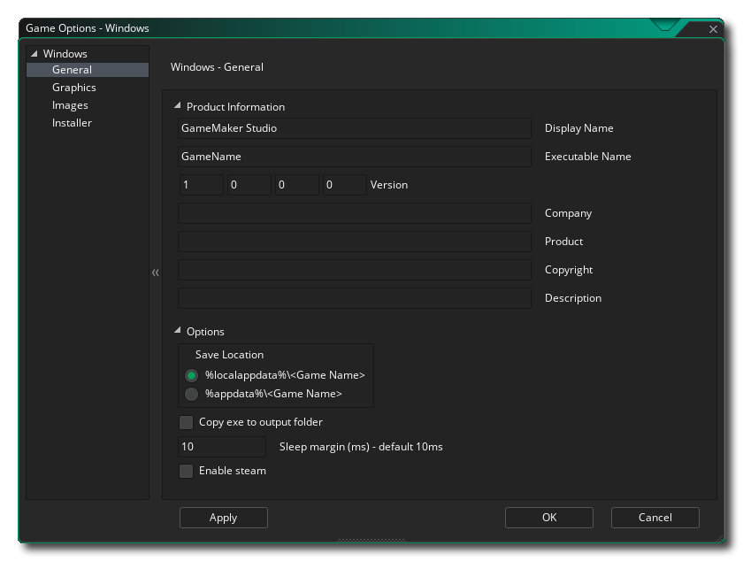
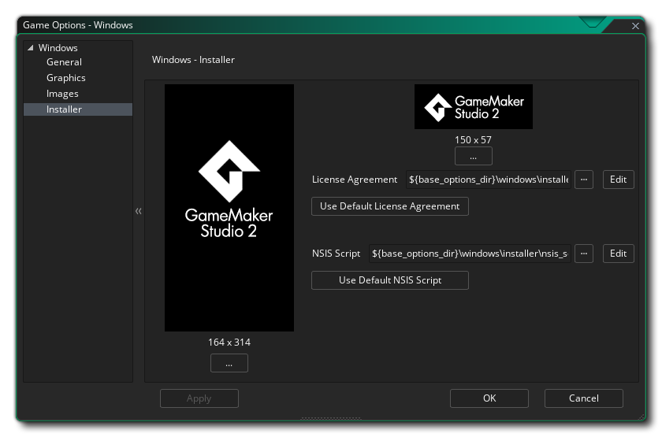

In diesem Abschnitt werden die verschiedenen Optionen beschrieben, die Ihnen zur Verfügung stehen, um zu steuern, wie Ihre Windows-Spielprojekte kompiliert werden. Die verschiedenen Abschnitte sind:

Auf der Seite " Allgemein " für Windows-Spiele sollten Sie die erforderlichen Informationen angeben, damit Windows angezeigt werden kann, wenn Ihr Spiel installiert ist und ausgeführt wird. Diese Informationen werden in den Abschnitt Produktinformationen aufgenommen und müssen vollständig ausgefüllt werden.
Im Abschnitt " Optionen " dieses Fensters können Sie auswählen, wo das Spielpaket installiert werden soll. %localappdata% " oder " %appdata% msgstr "Ordner" sowie die Option " Copy exe to output folder" festlegen. Im Allgemeinen sollten Sie diese Option nie benötigen, sie wird jedoch für Benutzer bereitgestellt, die über verschiedene DLLs verfügen, die miteinander und mit Ihrem Spiel kommunizieren. Wenn diese Option aktiviert ist, wird sie beibehalten Die Spiel-EXE-Datei sollte sich beim Testen im Ausgabeordner befinden, anstatt sie im Temp- Ordner abzulegen.
Als Nächstes können Sie den Windows-Schlafbereich einstellen. Diese Option steht im Zusammenhang mit der Verringerung des Stotterns, wenn Sie Ihr Spiel auf bestimmten Systemen ausführen. Wenn Ihr Spiel schneller als Ihre GameMaker Studio 2 läuft, "schläft" GameMaker Studio 2 für die verbleibende Zeit, aber dieser Schlaf kann ungenau sein und Sie können den Schlaf oft länger als nötig beenden, was dazu führt, dass Ihr Frame länger dauert stottert. Um dies zu umgehen, können wir weniger Zeit einschlafen und dann den Rest der Zeit in einer engen Schleife sitzen, um die Genauigkeit zu verbessern. Das Problem beim Sitzen in einer Schleife besteht jedoch darin, dass die CPU-Auslastung zunimmt, was wiederum dazu führen kann Die CPU-Temperaturen steigen an und der Lüfter läuft schneller. Standardmäßig ist dieser Wert auf 10 festgelegt. In 99,99% der Fälle sind Sie damit einverstanden. Für Low-End-Computer oder für Computer mit vielen Hintergrundprozessen ist dies jedoch möglicherweise keine ideale Lösung (oder für Windows XP) auch sehr hochwertige Maschinen) und es kann ein Wert von 1 oder 15 oder etwas erforderlich sein. Beachten Sie jedoch, dass dies eine systemspezifische Konfiguration ist. Was auf Ihrem Build-Computer funktioniert, ist möglicherweise nicht für einen anderen Benutzer geeignet. Wenn Sie also Zweifel haben, belassen Sie es auf 10.
Die letzte Option ist die Aktivierung von Steam für Ihr Spiel. Wenn Sie diese Option aktivieren, müssen Sie sicherstellen, dass das Steam Works-SDK installiert ist (siehe hier ) und dass Sie die Steam App-ID in den allgemeinen Optionen für das Spiel hinzugefügt haben.
Die Grafikoptionen sollten Sie konfigurieren, um festzulegen, wie die Grafikkarte Ihres Ziel-Windows-PCs von Ihrem Spiel verwendet wird. Die folgenden Optionen stehen zur Änderung zur Verfügung:
- Cursor anzeigen: Wenn diese Option aktiviert ist, wird der normale Windows-Cursor angezeigt. Wenn Sie das Kontrollkästchen deaktivieren, wird kein Cursor angezeigt, sofern Sie keinen in Ihrem Spielcode erstellt haben. Dies ist standardmäßig aktiviert.
- Vollbild starten: Wenn diese Option aktiviert ist, wird das Spiel im Vollbildmodus gestartet, andernfalls wird es im Fenster angezeigt. Dies ist standardmäßig deaktiviert.
- Vollbildwechsel zulassen: Mit dieser Option kann der Benutzer mit den Standard-Windows-Tastenkombinationen von Vollbild zu Fenster und zurück wechseln. Dies ist standardmäßig deaktiviert.
- Farben zwischen Pixeln interpolieren: Aktiviert die Interpolation, wodurch die Pixel im Wesentlichen "geglättet" werden. Für gestochen scharfe Pixelgrafiken sollte diese Einstellung deaktiviert sein. Wenn Sie jedoch schöne Alpha-Blends und geglättete Kantengrafiken haben, sollten Sie diese Einstellung lieber beibehalten. Dies ist standardmäßig aktiviert.
- Verwenden Sie die Synchronisierung, um ein Zerreißen zu vermeiden: Dadurch wird V-Sync ein- oder ausgeschaltet (V-Sync wird verwendet, um die Aktualisierungsgeschwindigkeit Ihres Spiels mit der Aktualisierungsrate des Monitors zu synchronisieren). Wenn Sie ein Spiel mit einer Raumgeschwindigkeit von 120 haben und der Spieler über einen Bildschirm mit einer Bildwiederholfrequenz von 60 verfügt, wird die Spielgeschwindigkeit auch auf 60 eingestellt, wenn Sie diese Option aktivieren. Dies ist standardmäßig deaktiviert.
- Fenstergröße ändern: Wenn Sie diese Option auswählen, kann der Benutzer die Größe des Spielfensters ändern (die Option Randloses Fenster muss deaktiviert sein , damit dies funktioniert). Diese Option ist standardmäßig deaktiviert.
- Randloses Fenster: Wenn Sie diese Option aktivieren, wird Ihr Spiel mit einem randlosen Fenster ausgeführt. Dabei werden die normalen Schaltflächen zum Minimieren, Maximieren und Schließen sowie der Spieletitel entfernt. Dies ist standardmäßig deaktiviert.
- Skalierung: Hier können Sie auswählen, ob das Seitenverhältnis beibehalten werden soll (dh ein 4: 3-Raum wird bei einem 16: 9-Format als "Letter Box" bezeichnet) oder vollständig skaliert werden (das Bild wird so vergrößert, dass es in den gesamten Bildschirm passt).
WARNUNG! Durch das Ausschalten der Anwendungsoberfläche werden alle in den Windows-Spieloptionen festgelegten Skalierungsoptionen deaktiviert, bis sie wieder eingeschaltet werden. Weitere Informationen finden Sie unter Die Anwendungsoberfläche.Schließlich gibt es noch die Möglichkeit, die Größe der Textur-Seite einzustellen. Die Standardgröße (und die meisten kompatiblen) ist 2048x2048, aber Sie können zwischen 256x256 und 8192x8192 wählen! Es gibt auch eine Schaltfläche mit der Bezeichnung Ansicht, die die Textur-Seiten für diese Plattform generiert und ein Fenster öffnet, in dem Sie sehen können, wie sie aussehen. Dies kann sehr nützlich sein, wenn Sie die Struktur der Textur-Seiten sehen möchten und verhindern möchten, dass Textur-Seiten größer (oder kleiner) als erforderlich sind.
HINWEIS: Beachten Sie, dass je größer die Textur-Seite ist, desto weniger kompatibel ist Ihr Spiel auf PCs mit niedrigeren Spezifikationen.
Im Bilderbereich geben Sie die Bilder an, die Ihr Spiel benötigt. Für Windows müssen Sie eine Symboldatei angeben (die sich in befinden muss) .ico Format) und auch ein Startbildschirm (der sein kann) .png. .bmp. .jpg oder .gif Format). Der Begrüßungsbildschirm wird angezeigt, während das Spiel geladen wird. Sie können diese Option aktivieren oder deaktivieren, indem Sie die Option " Begrüßungsbildschirm verwenden" aktivieren (standardmäßig deaktiviert).
Beachten Sie, dass GameMaker Studio 2 über ein Project Image Generator- Tool verfügt, mit dem automatisch alle Bilder erstellt werden können, die für die verschiedenen Zielplattformen benötigt werden, auf denen Ihr Spiel kompiliert wird. Wenn Sie dieses Tool verwenden, sollten Sie die erstellten Bilder überarbeiten, um sicherzustellen, dass sie Ihren Anforderungen entsprechen.

Windows-Spiele können mit einem Installationsprogramm erstellt werden. Hier können Sie die verschiedenen Einstellungen und Grafiken definieren, die GameMaker Studio 2 bei der Erstellung verwendet. Zunächst haben wir die grafischen Optionen, die das Aussehen des Installers selbst bestimmen:
- Fertig: Die Grafik, die auf der Seite "Fertig" des Installationsprogramms angezeigt wird. Muss im *.bmp-Format sein und 164x314px messen.
- Kopfzeile: Die Grafik, die angezeigt wird, während das Installationsprogramm ausgeführt wird. Muss im *.bmp-Format sein und 150x57px messen.
Sie können auch auf eine bestimmte Lizenzvertragsdatei (ein Beispiel wird mit GameMaker Studio 2 ) und eine benutzerdefinierte NSI-Skriptdatei (Details hier ) zeigen, falls Sie eine benötigen, oder klicken Sie auf die entsprechenden Schaltflächen, um zu den mit GameMaker Studio 2 gelieferten Standarddateien zurückzukehren GameMaker Studio 2